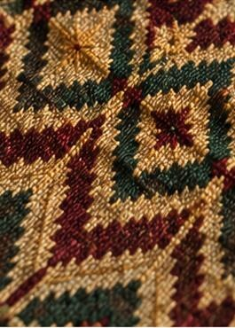

Our Craft
A pattern passed down, not printed on
Tilet is Ethiopia's traditional woven border pattern — and every ZURIA piece carries it the way it's always been made: on a handloom, thread by thread.

The Loom
Why handloom still matters
A power loom can print a tilet-style pattern in minutes. A handloom takes days — but the thread tension, the slight irregularities, and the depth of color are things a printed pattern simply can't replicate.
We work with a collective of 14 weavers across Addis Ababa, most of whom learned on the same looms their parents used.
From Thread to Garment
How a piece is made
Thread & dye
Cotton is spun and dyed in small batches — maroon, gold and forest green are our signature tilet colors.
Weaving
The base cloth and tilet border are woven together on a shuttle loom, not attached afterward.
Cutting & fitting
Each piece is cut to your measurements, whether made-to-measure or a fitted studio appointment.
Finishing
Hand-finished seams and a final press before it ships or is ready for pickup.
The Details
What the pattern means
Tilet patterns vary by region and occasion — a wider, more elaborate border traditionally marks a bridal or formal piece, while a narrower border suits everyday wear. We keep this distinction in our own collections rather than flattening it into one generic "ethnic pattern."
When you order made-to-measure, we'll walk you through which border width and color combination fits your occasion.
